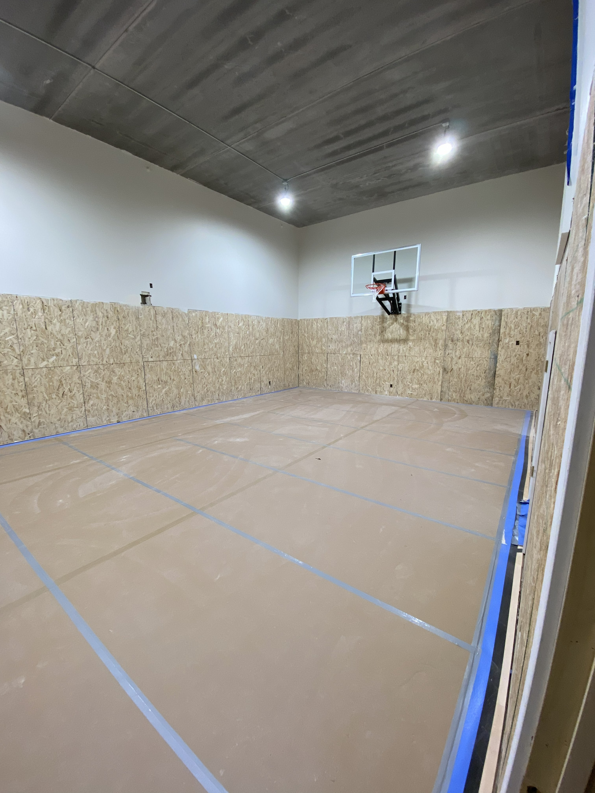
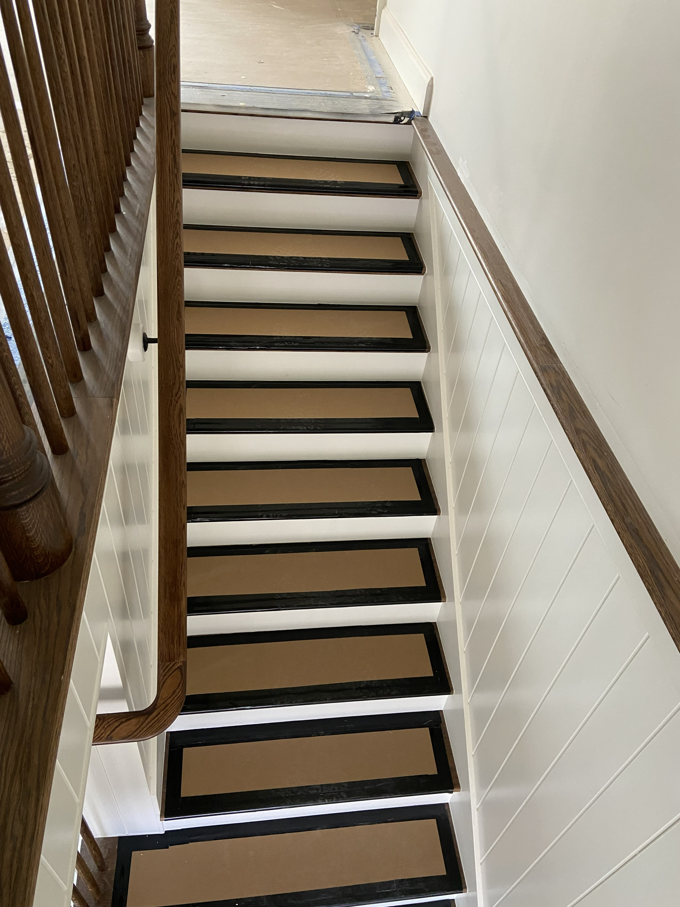
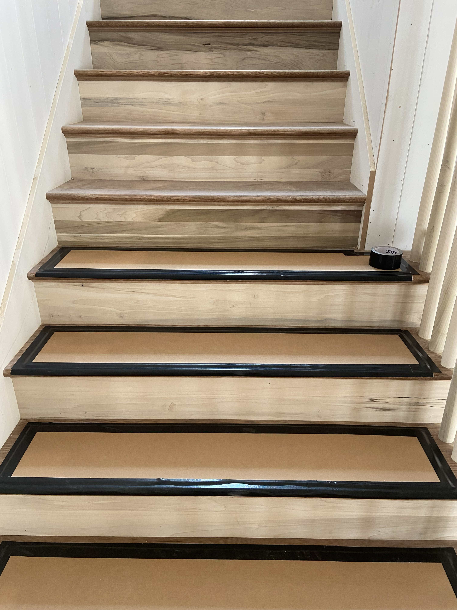
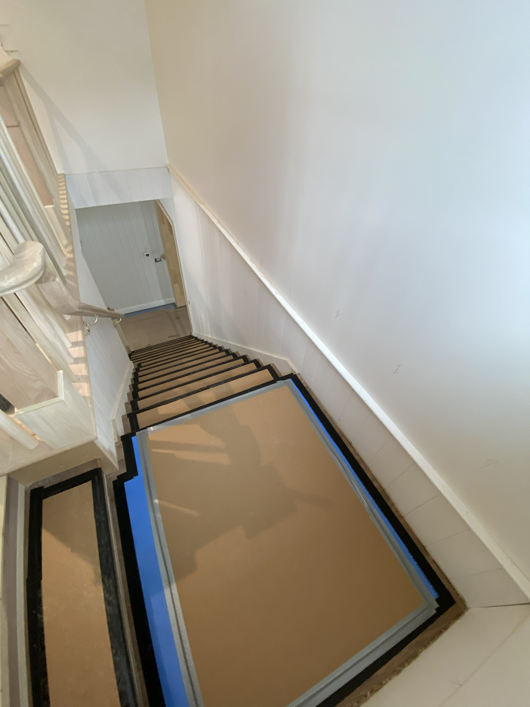

Primary Surface Layer
Floorotex
Floorotex provides durable top-layer coverage around borders for a tight seal and helps create a cleaner, more professional install on every build.
On any build, floors can get scratched, chipped, cracked, or stained after they are already installed. That creates rework, delays, and extra cost. Floor Protection Pros focuses on preventing those problems before they happen by installing professional-grade temporary protection materials and maintaining them throughout the build as needed.
Good floor protection does two things at once. It prevents costly repairs on finished surfaces, and it keeps the job site looking clean and professional — which gives homeowners pride in their builder and signals quality to every visitor who walks through. Every build benefits from that. On custom and luxury homes, where finishes are expensive and expectations are high, it matters even more.
Professional installation of temporary floor protection after finish floors are in place.
Optional follow-up visits to repair worn sections and keep protection looking clean and secure.
Targeted repair and replacement of damaged protection after cabinet or trim crews have been through.
Our best-practice model is built around layered protection, not a one-material shortcut. We combine Floorotex, cardboard, and multiple tape types to protect finished floors while keeping installs clean, secure, and practical for active job sites.
Primary Surface Layer
Floorotex provides durable top-layer coverage around borders for a tight seal and helps create a cleaner, more professional install on every build.

Supplemental Coverage
Cardboard is used where extra reinforcement, stair detailing, or tighter custom coverage is needed to keep vulnerable areas protected.

Secure Installation
Our installs use a combination of duct tape, Ram Board tape, and no-residue edge tape so protection stays secure without treating every surface the same way.
Builders hire us for two reasons — and both pay for themselves.
Protection. A scratch on hardwood or a chipped tile can cost a lot more than the protection service itself. Preventing damage on finished floors is the baseline, and on custom and luxury builds where materials are expensive, even a small amount of rework gets costly fast.
Presentation. Clean, well-maintained floor protection changes how a project looks and feels. Sub-contractors tend to match the standard they see — when protection is tight and presentable, crews keep the site tidy. When it peels up and looks sloppy, the mess follows. A clean, organized job site gives homeowners pride in their builder and leaves a strong impression on every visitor, neighbor, or future client who walks through the home.
Real installs from active homes, stair systems, and high-traffic spaces where clean coverage and precise edge protection matter.

Full-Room Coverage
Wall-to-wall coverage helps preserve finished surfaces in open recreation areas and other high-traffic rooms during ongoing construction.

Stair Detailing
Each stair run is protected individually for a cleaner look, safer movement, and better long-term hold during the build.

Precision Fit
Tight edges and consistent spacing help protect finished stair surfaces without making the install look rough or temporary.

Landing Transitions
Protection is carried through stair landings and transitions so crews can move confidently without exposing vulnerable finished flooring.
Select your product, service, and square footage to get a fast estimate.
Get a Rough QuoteFloor Protection Pros is built around responsive service, dependable jobsite upkeep, and strong relationships with builders who expect clean work and professional presentation.
Phone: 385-560-9171
Founder
Focused on dependable field execution and keeping job sites protected, clean, and client-ready throughout the construction process.

Founder
Focused on communication, presentation, and delivering a professional experience that helps builders protect finished floors with confidence.